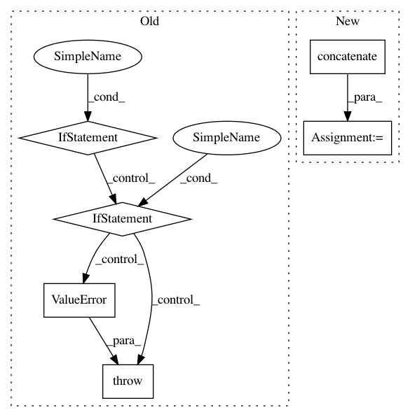

1a2462f18707e04f294224053473668820111cf5,PyPi/approximators/regressor.py,Regressor,fit,#Regressor#Any#Any#,24
Before Change
y (np.array): target;
fit_params (dict): other parameters.
if x.ndim == 1:
x = np.expand_dims(x, axis=0)
elif x.ndim > 2:
raise ValueError("Training set dimension not suitable for the "
"regressor.")
if self.features:
x = self.features.fit_transform(x)
if self.input_scaled:
After Change
assert x[0].ndim == 2 and x[1].ndim == 2
assert x[0].shape[0] == x[1].shape[0]
x = np.concatenate((x[0], x[1]), axis=1)
if isinstance(x, list):
if self.features:
x[0] = self.features.fit_transform(x[0])
In pattern: SUPERPATTERN
Frequency: 3
Non-data size: 6
Instances
Project Name: AIRLab-POLIMI/mushroom
Commit Name: 1a2462f18707e04f294224053473668820111cf5
Time: 2017-07-23
Author: carlo.deramo@gmail.com
File Name: PyPi/approximators/regressor.py
Class Name: Regressor
Method Name: fit
Project Name: mne-tools/mne-python
Commit Name: 7c1233ba612bdb08d640c924ef4220b2fe13fb71
Time: 2020-09-25
Author: larson.eric.d@gmail.com
File Name: mne/io/reference.py
Class Name:
Method Name: add_reference_channels
Project Name: AIRLab-POLIMI/mushroom
Commit Name: 1a2462f18707e04f294224053473668820111cf5
Time: 2017-07-23
Author: carlo.deramo@gmail.com
File Name: PyPi/approximators/regressor.py
Class Name: Regressor
Method Name: predict